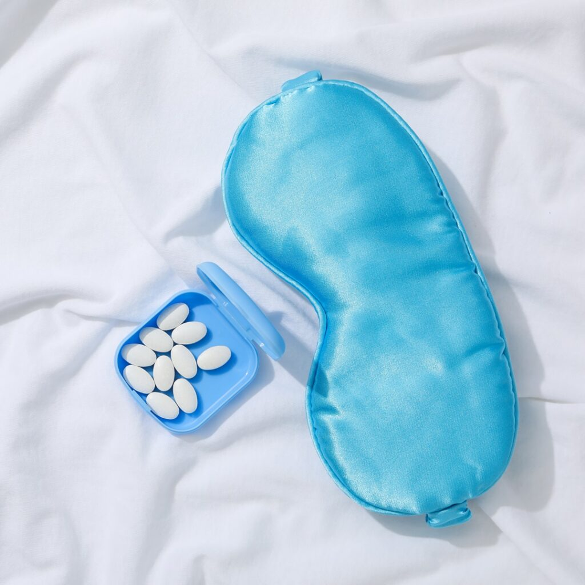
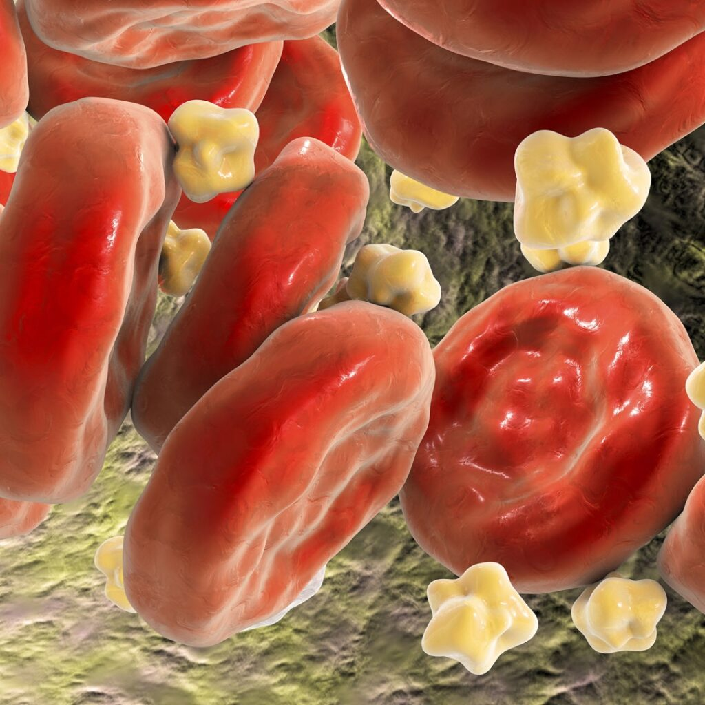
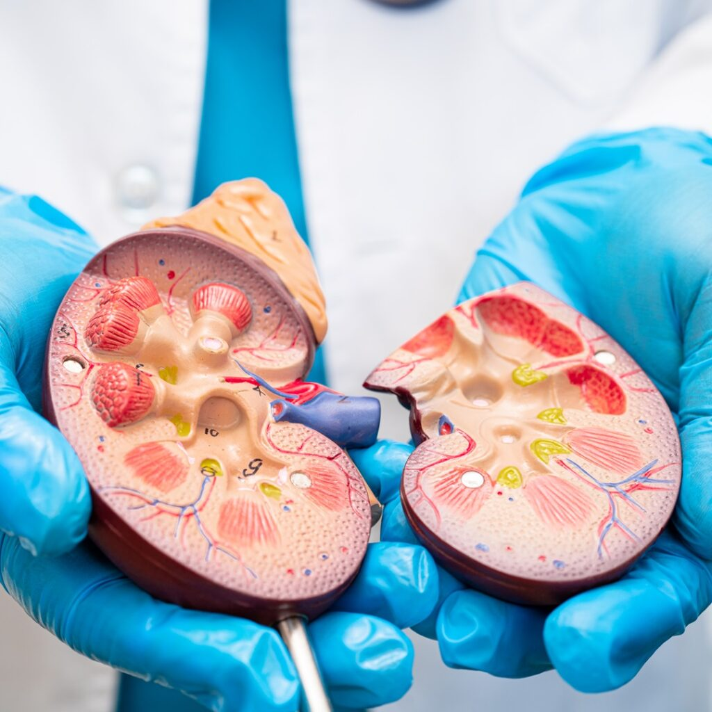

Cholesterol Is Not the Enemy. It Is Part of the Bigger Health Picture. Written by Symbios Health Medically reviewed by Dr. Stephen…
By Stephen S. Luther, MD — Fueling the Human Engine: The Science of Energy, Performance, and Metabolic Health. If you have…
By Stephen S. Luther, MD — As a physician dedicated to metabolic health and whole-person wellness, I have seen medical trends…
At MedSpa by Symbios® Health in Hilton Head Island, South Carolina, our passion, “Healthy, Fit and Beautiful for Life,” guides our…
Fatigue. Low drive. Mood swings. Loss of confidence. These aren’t just byproducts of aging – they’re often signs of low testosterone, a condition that quietly robs men of their edge.
ED is treatable. Causes such as diabetes, heart disease, stress, or low testosterone don’t have to define you. You have the power to take charge of your life, and we’re here to help.

Mounting evidence suggests that the convenience of prescription sleeping pills may come at a considerable long-term cost.

Emerging research reveals that cholesterol plays a critical role in maintaining health, particularly as we age.
A growing wave of research points to the ketogenic diet – a high-fat, low-carb eating plan – as a game-changer for managing psychiatric conditions.
Research shows there’s no real evidence supporting the need for eight hours of sleep, and ancient humans didn’t even sleep that way.

A compelling connection exists between metabolic disorders – such as prediabetes – and the onset of kidney stones.
Fatigue, often dismissed as a mere physical limitation, is an emotion crafted by the brain to regulate exercise and protect the intricate harmony of our internal systems.